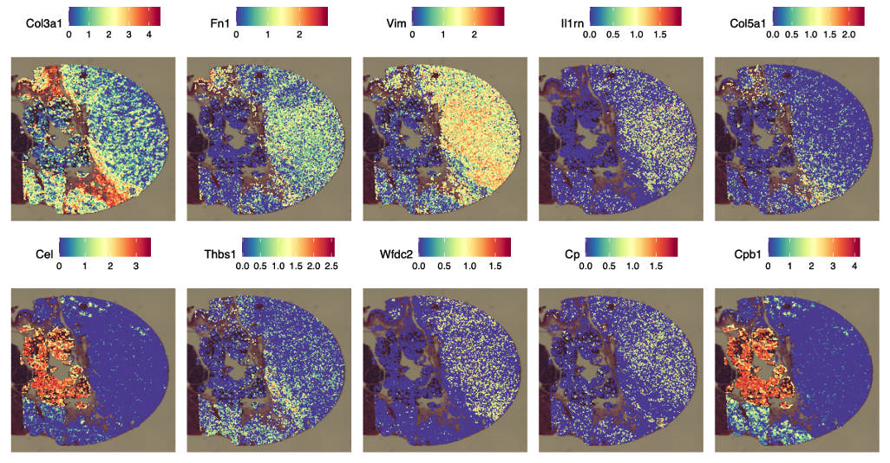
Question-driven biology
Different immune and stromal programs can occupy different territories inside the same tumor.
Future independent research program
Feng Guo Research focuses on three linked problems: why PDAC resists immunotherapy, why liver metastases can create an even harder immune environment, and how functional screening plus spatial omics can point us toward better therapies.

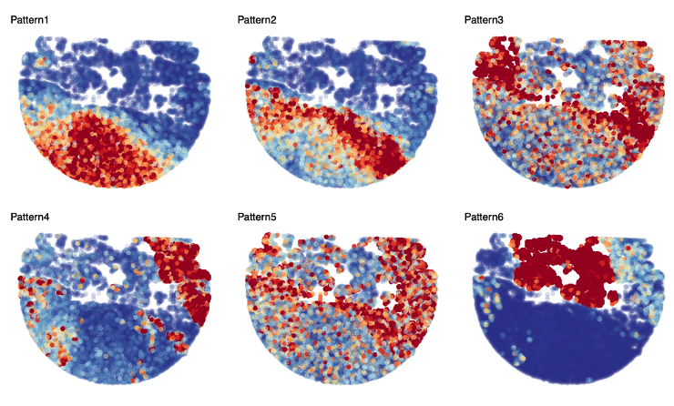
We aim to build a laboratory where precise mouse models, high-resolution sequencing, spatial analysis, and mechanism-driven experiments are used together. The goal is not only to describe pancreatic cancer, but to explain why treatment fails and how the next generation of therapies can be made more effective.
About the PI
Feng Guo is a surgeon-scientist in pancreatic disease research whose work bridges pancreatic surgery, tumor immunology, functional genomics, and translational therapeutic design.
His scientific training began at Tongji Medical College, Huazhong University of Science and Technology, and later expanded from clinical pancreatic surgery into mechanistic cancer research. His current research vision centers on pancreatic ductal adenocarcinoma, especially immune resistance, liver metastasis, and how to develop therapies that remain effective inside hostile metastatic niches.
This planned lab will bring together in vivo screening, single-cell and spatial profiling, epigenomic analysis, and engineered immune cell strategies to uncover actionable vulnerabilities in advanced pancreatic cancer.
Big Questions

Pancreatic tumors often grow inside a dense, immunosuppressive environment. We want to know which genes and signaling pathways help those tumors stay invisible or resistant even when the immune system is present.
One major strategy is to use in vivo CRISPR screening to identify resistance genes directly inside mouse tumors, where immune cells, fibroblasts, and tumor cells are interacting in real time.

A liver metastasis is not just the same tumor in a new place. The liver is a special immune organ, and metastatic cancer cells may exploit that environment to build stronger immune tolerance.
We compare primary tumors and liver metastases at single-cell and spatial levels to understand how macrophages, fibroblasts, hepatocytes, and T cells are reorganized across organs.

Tumor response is not controlled by surface markers alone. Metabolism and epigenetic state can change cytokine output, chromatin accessibility, and how visible tumor cells become to the immune system.
We are interested in therapy-induced rewiring, such as FASN-linked immune and epigenetic changes, because those may create new opportunities for combination therapy.
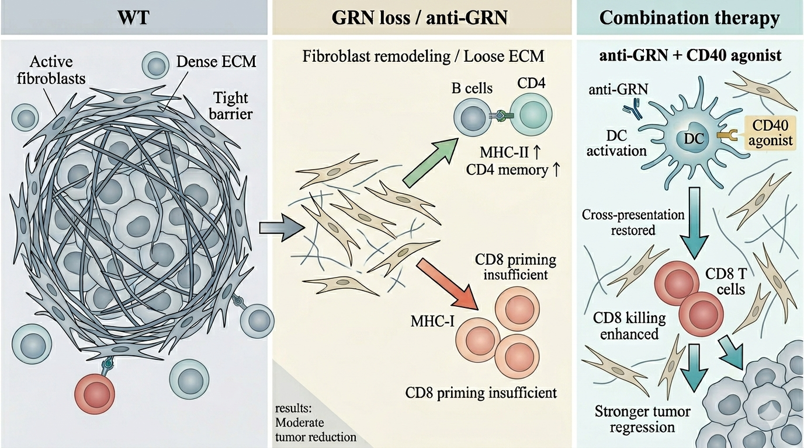
One example is the GRN project. GRN is a secreted factor linked to fibrosis, immune suppression, and stromal support. When this axis is changed, the whole ecosystem can shift.
Instead of asking whether GRN is simply good or bad, we ask what happens to fibroblasts, antigen presentation, T-cell states, and response to combination therapy when the GRN-dependent support network is loosened.
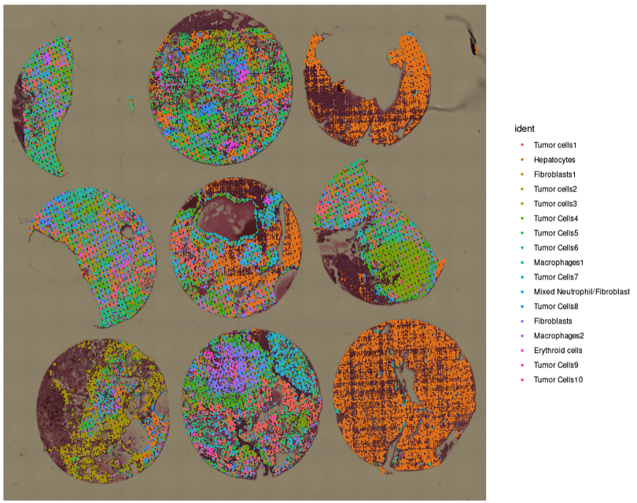
One important emerging question in our work is why the same KRAS-targeted therapy may perform differently depending on where the tumor is growing. We have already observed that liver metastases can show weaker responses than primary pancreatic tumors.
A key follow-up direction is to use Visium HD and other spatial approaches to ask whether liver metastases preserve a more suppressive immune niche, stronger stromal protection, or a different balance of antigen presentation and T-cell access after KRAS inhibition.
Project Focus
Observed question
A major direction in this research program is to understand why the same KRAS inhibitor may not perform equally well across anatomical sites. We have already observed that liver metastases can be less responsive than primary pancreatic tumors.
This matters because a patient does not only have a mutation. A patient also has an organ context. The liver may provide stronger stromal protection, different myeloid support, and a more difficult environment for T-cell entry and antigen presentation.
Our next step is to use Visium HD and related spatial approaches to compare primary lesions and liver metastases after KRAS inhibition, asking where immune suppression persists, where stromal barriers remain active, and which niches may explain weaker drug response.


Toolbox
Orthotopic pancreatic models, portal-vein liver metastasis models, ultrasound monitoring, and endpoint pathology allow us to study treatment response in a more realistic disease setting.
Rather than guessing one target at a time, we can perturb many genes at once and identify which ones truly help tumors resist immune pressure in vivo.
We use scRNA-seq and Visium HD to ask not only which cells are present, but where they are located and how they organize into immune or stromal niches.
Chromatin-level assays help us understand why certain cell states appear under therapy and how epigenetic accessibility shapes resistance programs.
When tissue dissociation is imperfect, deconvolution and domain-aware analysis help us recover cell-type structure from intact tissue sections.
The end goal is therapeutic design: smarter targeted therapy, immunotherapy, and solid-tumor cell therapy guided by real tumor ecology.
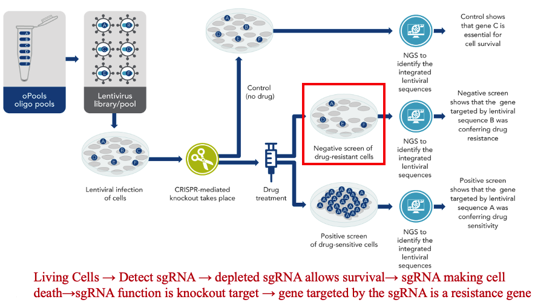

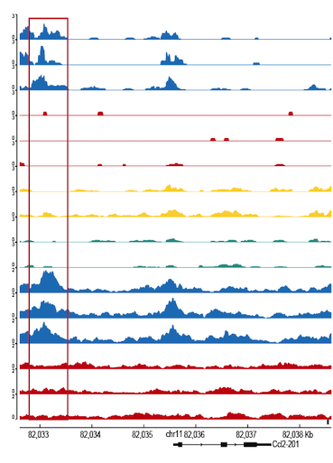

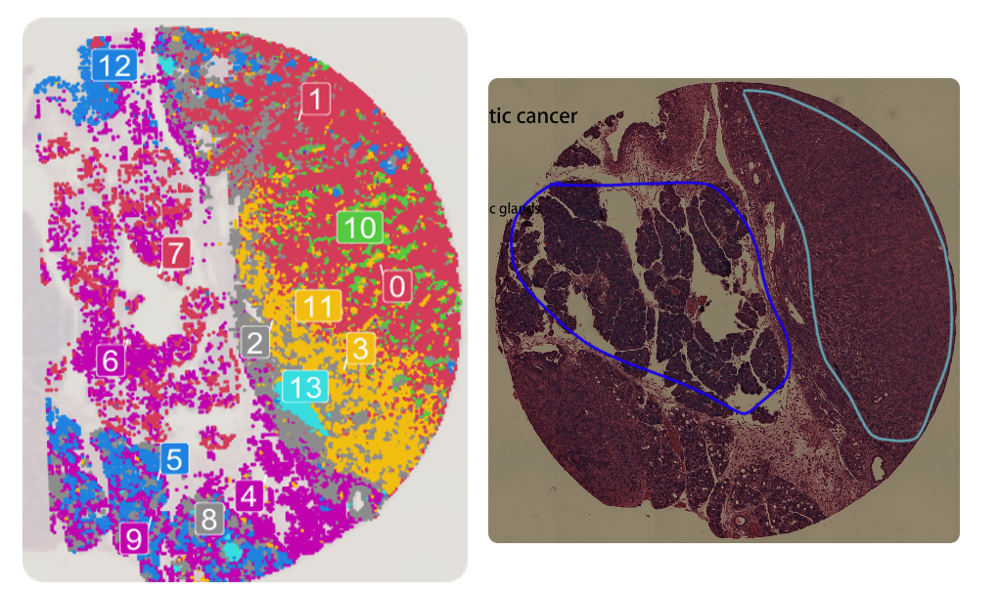
Model Systems
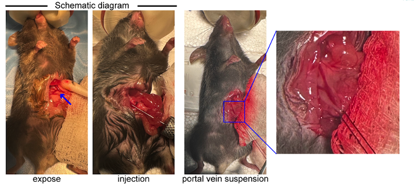
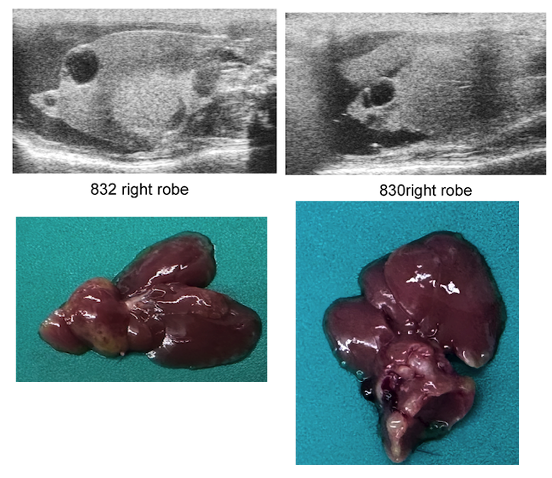
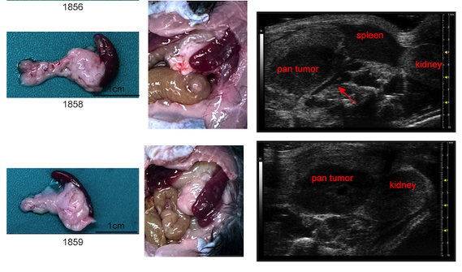
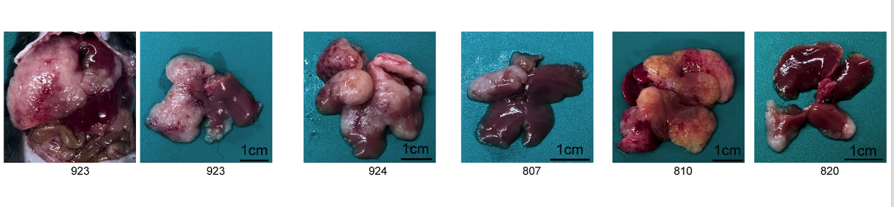
GRN Project
GRN, also known as progranulin, is a secreted factor linked to immune regulation, fibrosis, and tissue repair. In tumors, that same biology may help build a protective ecosystem around cancer cells.
Our GRN-oriented work asks a public-facing but mechanistically deep question: if we loosen this stromal-immune support axis, why does tumor growth slow down, yet not completely disappear? Early evidence suggests that GRN loss can reduce fibrosis and reshape antigen presentation, but may not fully restore strong CD8 cytotoxic function on its own.
That makes GRN a useful example of how a single secreted factor can change fibroblasts, macrophages, B-cell and CD4 programs, and the physical structure of the tumor at the same time.
Selected Highlights
Conference
In vivo CRISPR/Cas9 screening identified fatty acid synthase (FASN) as a target to enhance anti-PD-1 therapy in pancreatic cancer.
Conference
GRN deficiency loosens stromal barriers and enhances MHC-II signaling while reducing MHC-I-driven cytotoxic immunity.
Publication
Cancer Research, 2024. Mechanistic work showing how CDK4/6 signaling can modulate TBK1 phosphorylation and suppress STING pathway activity.
Publication
Oncogene, 2022. A mechanistic study illustrating how signaling circuits can reshape malignant progression in pancreatic cancer.
Accepted
International Journal of Biological Sciences, accepted in 2026. New work connecting E2F3, TAB1 ubiquitination, and NF-kB pathway activation in pancreatic cancer.
Connect
If you are interested in pancreatic cancer immunology, liver metastasis, functional genomics, or spatial biology, you are welcome to reach out for scientific discussion and idea exchange.
This site reflects an evolving research direction. Future collaborations may span tumor immunology, stromal biology, mouse modeling, single-cell and spatial omics, and translational therapeutic strategy.
For questions, feedback, or academic conversation, the best first step is simply to send an email and introduce your interests.
Contact
This website is a concept page for a future research program. For academic contact, collaboration, or early discussions, please reach out by email.